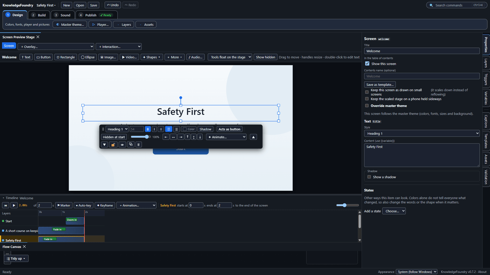
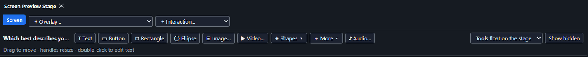
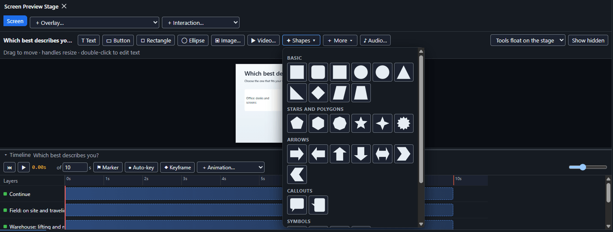
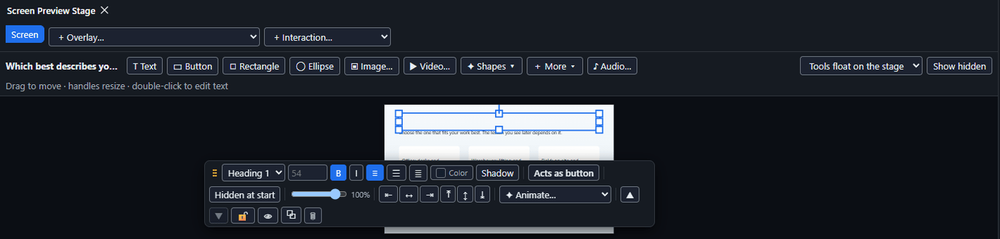
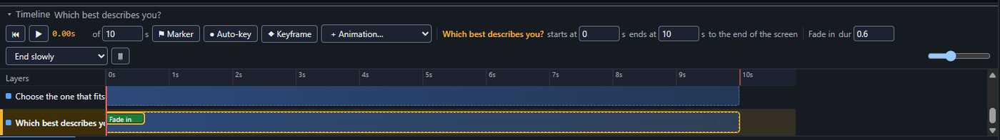

Arrange and animate a screen
Select a Screen on the Flow Canvas, then work directly on the Screen Preview Stage (top left).

| To do this | Do this |
|---|---|
| Add an item | Click Text / Button / Shape / Ellipse / Image… above the stage, or drag one onto the stage |
| Move, resize, rotate | Drag it; drag the square handles; drag the round handle above it (Shift snaps to 15°) |
| Edit wording | Double-click text or a button, type, then click away (Esc cancels) |
| Colors, font size, alt text | Use the small toolbar that floats beside the selected item. For a button it also has B, I and U to make the label bold, italic or underlined |
| Reorder layers | Layers tab (right): drag rows. Top of the list is in front |
| Make something appear later | Timeline (under the stage): drag its bar right |
| Keep something showing until the learner leaves the screen | Drag the right edge of its bar all the way to the end of the timeline. If the narration is shorter than the screen, also lower the screen's length in the of ___ s box so the timeline ends where the narration does |
| Add an entrance or exit effect | Select the item, move the playhead, choose + Animation… |
| Animate a move | Turn on ● Auto-key, drag the playhead to a time, then move the item |
| Add a star, arrow, speech bubble, heart, ring and more | Press ✦ Shapes above the stage (the Rectangle button next to it adds a plain rectangle; Shapes has the full palette) and click a shape (or drag it onto the stage). With it selected, the floating toolbar has plain sliders for what can be adjusted: Points, Point depth, Head length, Tail position and so on. Use Outline for an outline and its thickness. Change the kind with the Shape list |
| Show a number as a progress ring or pie | Add a Progress ring or Pie, then under Show variable in the floating toolbar choose a number variable (for example quizPercent) and the value at which it is full. It fills as the number changes |
| Fill a button or shape with a gradient | Select it, then press Gradient next to Fill in the floating toolbar. Pick From and To colors and an angle (90 = left to right, 180 = top to bottom). Press Gradient again to go back to one color. Check course warns if a button's label is hard to read on it |
| Make text, a picture or a shape clickable | Select it, then in the floating toolbar press Acts as button. It gets a socket on the Flow Canvas. A shape needs a Screen reader name, typed in the box that appears |
| Preview | ▶ in the Timeline plays the screen. On the Publish tab, Preview from start runs the course from the beginning, and Preview from here runs it from the screen selected on the Flow Canvas (what comes before it is skipped, and variables start at their starting values). The Flow Canvas follows along: it moves to keep the current card in view and keeps its zoom |
The row above the stage adds items. Choose Text, Button, Rectangle, Ellipse, Image…, Video…, Shapes, More or Audio…, or drag one onto the stage:

The Shapes button opens the full palette of basic shapes, stars and polygons, arrows, callouts and symbols:

With an item selected, the floating toolbar beside it holds its text style, size, bold, italic, alignment, Color, Shadow, Acts as button, Hidden at start, opacity and Animate…:

To add an entrance effect, select the item and choose one from + Animation…. The item's row in the Timeline then shows the effect, here Fade in, and its length can be changed in the box beside it:

Notes: only buttons are clickable by default. Any text, picture or shape can be made clickable with Acts as button in the floating toolbar (see the table); press it again to turn it back into plain content, which removes its wires. Clickable items can be reached with Tab and pressed with Enter or Space, and give a warning if a screen reader would have nothing to announce. Buttons are not clickable until they appear. The stage is a fixed 16:9 canvas that scales to fit the window.